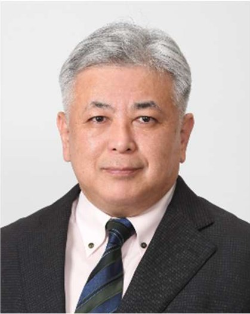
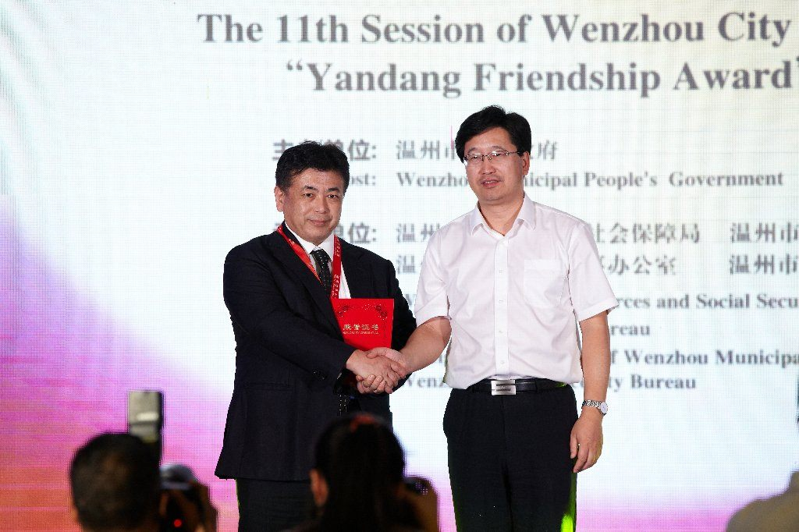
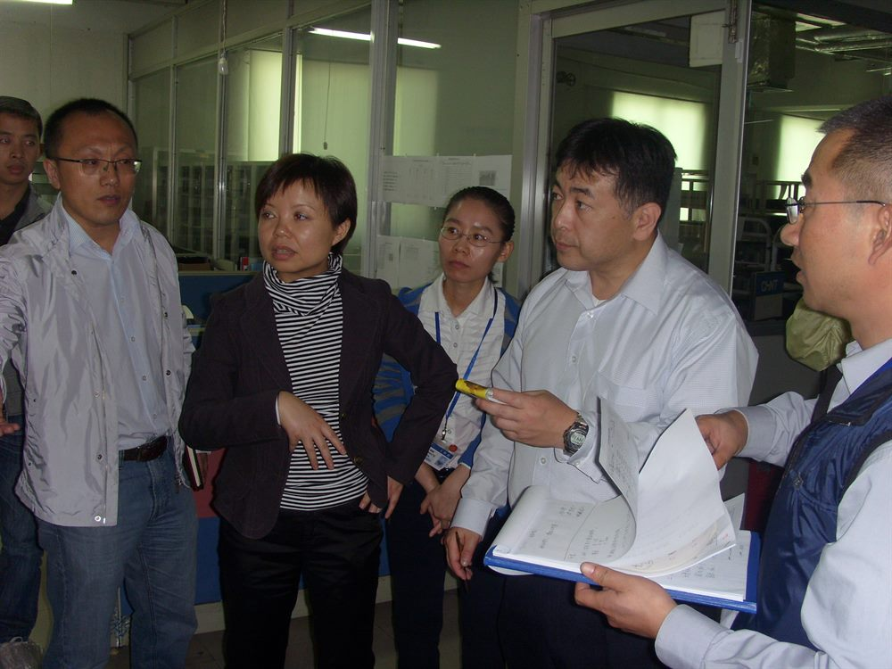
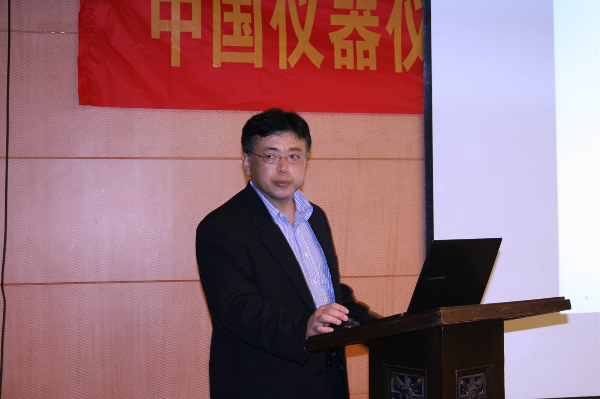
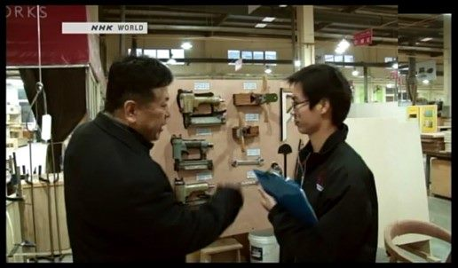
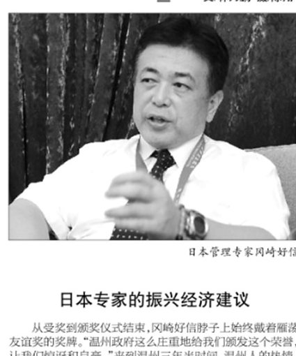

岡﨑ＩＴコンサルティング株式会社
生産管理からＩＴ・人材育成まで。ものづくりに、伴走する。
トヨタ生産方式に基づく生産管理・現場改善から、ＭＥＳ・ＳＡＰなどの ＩＴ導入、海外（中国）展開支援まで。30年以上の現場経験で、 企業の強みを引き出します。

About
プロフィール
- 30年以上
- ものづくりの現場経験
- 12年
- 中国でのコンサルティング
- 2010年〜
- 独立・コンサルタント歴
- 2013年
- 雁蕩友誼賞 受賞

岡﨑 好信 ／ おかざき よしのぶ・代表取締役
1987年にオムロン株式会社へ入社し、生産情報システム部門で、生産ラインの改善（ＩＥ）から 製造実行システム（ＭＥＳ）の開発までを担当。カンバン・平準化などトヨタ生産方式の根幹となる 仕組みづくりと、部品調達のＥＤＩ化を含むＳＣＭ革新に取り組みました。
2004年からは上海工場のＳＣＭ構築・ＥＲＰ／ＭＥＳ導入を主導。2010年に独立して 岡﨑ＩＴコンサルティング株式会社を設立し、中国（温州・上海・蘇州ほか／通算12年）と 日本の製造業に対して、現場改善・ＩＴ導入・経営制度改革を支援してきました。現在は 関東の金属加工・食品メーカーで、ＫＰＩマネジメントや原価管理、ＭＥＳ導入などの コンサルティングを行っています。
- 拠点
- 日本国内・中国（上海／浙江省・江蘇省ほか）
- 専門領域
- 製造業の生産管理・現場改善（TPS・5S/6S・レイアウト）／ERP・MES導入・運用改善／原価改善・在庫低減／IoT・AI導入支援／プロジェクトマネジメント（PMO）
- 活動歴
- 製造・ＩＴ 1987年〜／コンサルタント 2010年〜
Services
サービス
-
生産管理・現場改善
トヨタ生産方式（精益生産）をベースに、5S・6S、レイアウト最適化、 可視化管理、自動化・セル生産の提案まで。製造現場のムダを取り、 品質と生産性を高めます。
-
ＩＴ・システム導入（ＭＥＳ／ＳＡＰ）
ＭＥＳ・ＳＡＰなどの基幹システム導入を、業務分析（Fit&Gap）から 安定運用まで一気通貫で支援。IoTでの稼働管理や、AIによる需要予測・ 作業分析にも対応します。
-
経営制度改革・海外（中国）支援
原価管理・方針管理・KPIマネジメントの仕組みづくり、提案制度や 人材育成による組織活性化。中国12年の経験を活かし、海外進出や 現地工場の改善も支援します。
Works & Career
経歴・実績
制作・実績
-

雁蕩友誼賞 受賞（2013年）
中国・温州市政府より、地域への貢献が認められ外国人専門家として表彰。
-

中国ローカル企業での現場指導
生産管理やトヨタ生産方式（精益生産）の導入を、現場に入って直接支援。
-

セミナー・講演活動
日中の企業・団体向けに、生産管理やＩＴ化をテーマとした講演を実施。
メディア掲載
-

NHK WORLD で紹介
生産管理・現場改善の取り組みが、NHK WORLD の番組で取り上げられました。
-

新聞掲載（中国・温州）
雁蕩友誼賞の受賞にあたり、現地紙で取り組みが紹介されました。
経歴
-
1987
オムロン岡山 入社
生産技術部にＩＥマンとして配属。現場改善に加え、現場情報システム （POP）・看板システム・ＥＤＩなど、ものづくりの情報化を推進。
-
2005
オムロン上海工場へ赴任
ＳＣＭ／ＩＴ課で、物流革新とＩＴ導入・展開を主導。
-
2008
オムロン草津事業所へ赴任
商品技術部で、図面管理・設計変更管理を担当。
-
2010
岡﨑ＩＴコンサルティング株式会社 設立
独立。中国（温州・上海・蘇州・杭州ほか）でローカル企業・仕入先を指導。 ＢＰＲ・ＳＡＰ／ＭＥＳ導入、5S・6S、人材育成を支援。
-
2011
上海 家具工場の現場改善指導
工場の生産管理や現場の改善指導、現場5S推進のしくみ構築と人材育成。
-
2013
雁蕩友誼賞 受賞（中国・温州市）
地域への貢献が認められ、外国人専門家として温州市より表彰。
-
2015
蘇州 液晶バックライト工場の6S活動推進
現場の6S推進により品質向上、社員の意識改革。
-
2017
関東の金属加工メーカーを支援（現在も継続）
現場6S改善・レイアウト最適化に加え、KPIマネジメントや原価管理の 再構築、AI・IoT活用による生産性向上を支援。
-
2022
岡山県産業振興財団 デジタル化推進コーディネーター
県内企業のデジタル化（DX）推進を支援。
-
2025
食品・薬品メーカーのＭＥＳ導入支援
製造実行系システム（ＭＥＳ）と品質管理システムの業務設計とFit＆Gap。
Contact